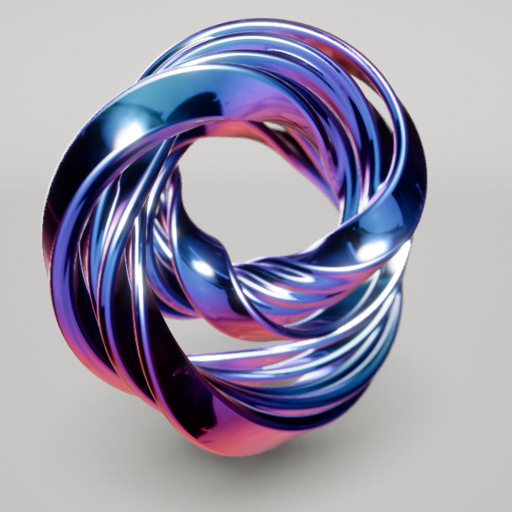
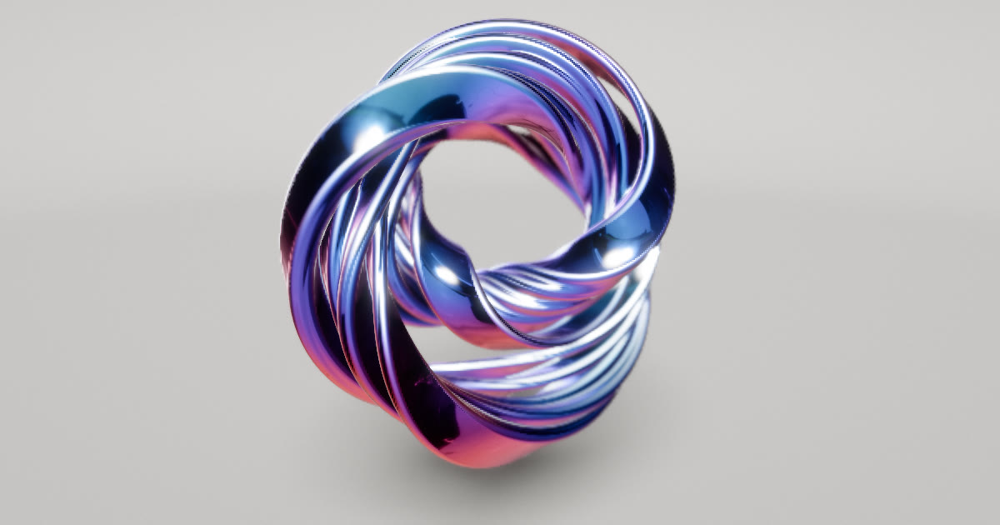

How Tangle ties
Two to five flat bands wind around a central hole as one coil, twisting around each other. The coil writhes, and every few seconds it re-ties itself into a different knot while the finish fades to a new colour. Here is how the shape, the motion, the reflections and the colour are made.

Bands that tie themselves in knots
Day 4's prompt was Tangle. Two to five flat, iridescent bands lie side by side and wind together around a central hole, twisting round each other as they go. The coil writhes slowly, and every few seconds it re-ties itself into a new knot, the bands sliding from one shape into the next.
The finish is holographic chrome, a pearl coat or tinted glass, in three palettes, and the band's section can be a squircle, pinched, fluted or a lens.
The bands follow one torus-knot path with a wobble. Their surface is a smooth union of swept bands: a mesh is projected onto it on the GPU every frame and its normals are recomputed per pixel, so merged bands blend into soft fillets. The bands reflect each other through a coarse distance volume, the colours come from thin-film optics, and the shared pipeline adds depth of field.
One path, shared by every band
Every coil starts as a single closed path, a (p, q) torus knot. As the path angle φ goes once around, the path winds p times around the central hole and q times around the tube of the torus, so a coil with p = 2 goes around the hole twice before it closes. Its radius and height wobble with slow sine waves, so the turns are never perfect circles.
The bands don't get a knot each. They lie side by side, wide faces together, on that one path. At each of 128 samples the code builds a frame: N points away from the hole's axis, square to the path, and B completes it. The bundle is turned about the path by a twist angle k·φ plus a phase and a wobble, which gives two axes: S, along which the bands stack, and W, across their width. Because k is a whole number, the twist closes on itself after one loop.
Each band then moves on its own. The gap to its neighbour breathes, the band slides across its width, tilts about the path and swells. Each of these is a wave along the path, amp · sin(k·φ + phase + t·speed), with its own small k and a speed of 0.12 to 0.3 radians per second. Time only moves the phases, so the coil writhes without changing its knot. Where a band's offset would carry it past the centre of a tight bend, a tanh eases it back out, so its centreline never turns back on itself.
The coil, from the sketch's formulas
Every band is drawn as a flat ribbon of its own width, from the same path, frame and wave formulas the sketch runs, with each random range drawn from a fixed seed. The real bands have a rounded section. The sketch picks p from {1, 2, 2, 2, 3}, keeps q at 1 except for some three-turn coils, and sets the twist within one of p (at least 1).
A rounded rectangle, with relief
A band's cross-section is a rectangle with its corners rounded to 0.8 of the half-thickness. At three times as wide as it is thick, that reads as a flat squircle. The other three shapes add a relief on top of it, weighted by one vec3 uniform, so they can mix. Changing shape is a smoothstep between two sets of three weights over one second, and the bands morph with it, even while paused.
Pinched pulls the middle of each wide face in by up to 0.45 of the half-thickness, with a (1 − u²)² profile, and pushes the corners out by up to 0.18 at 45°. Fluted cuts sin² grooves into each face, three per face, 0.1 of the half-thickness deep. Lens thins the band toward its edges by half the half-thickness, which also shrinks the corner arcs.
The shader keeps two views of the same shape. outline(f) gives the point and normal at a fraction f of the way around, for placing mesh vertices; it spends twice the vertex density on the corners, where the surface turns fastest. section(q) gives the signed distance and its gradient at any point q, for the projection and the reflections. A point off the outline takes the relief of its nearest point on the plain rectangle.
One band in cross-section
Drawn at a half-width of three half-thicknesses. Odd rings are turned half a side, so the quads become a triangle lattice. The faint lines are section()'s distance contours, 0.1 half-thickness apart, so the outline and the field can be checked against each other.
Bands melt together through a smooth minimum
The coil's surface is where a distance field crosses zero: the union of every band's distance. A plain minimum leaves a sharp crease where two bands touch. Tangle uses the polynomial smooth minimum instead. Where two distances a and b are within k of each other, it subtracts h²·k / 4 from the smaller, with h = 1 − |a − b| / k. The surface swells into a fillet across the gap, and further away the field is untouched.
The Merge slider runs from 0 to 0.3, and k is 0.4 of it, because the bands are thin. At the default of 0.12, k is 0.048, about three quarters of a typical half-thickness. The value eases toward the slider with a time constant of a third of a second, so a randomise never snaps the shape.
Three bands, side by side
Cross-section of a three-band, two-turn coil with every random range at its middle, at its actual size: half-thickness 0.064, half-width 0.19, gaps 0.027, with small slides across the width. Contours are 0.01 apart; the bold line is the surface. The field is the shader's smin(smin(d₁, d₂, k), d₃, k).
A mesh pulled onto the field every frame
The usual way to draw a distance field is to raymarch it: step each pixel's ray forward by the distance until it lands on the surface. The first version of Tangle did that, and it cost about 146 ms a frame. Every step had to search each band's samples for the nearest point, and a pixel needs many steps.
Now the coil is an ordinary mesh. Each band is a tube of 256 rings by 36 sides, and on every frame where the coil has changed, a GPU pass with one pixel per vertex puts every vertex on the field. A vertex starts on its band's own section at its ring, where the swept surface's position and normal are known exactly, including how the frame twists and the section changes along the band. A vertex with no other band within reach keeps that position and never evaluates the field; with Merge at 0, every vertex takes this path. The others take three Newton steps, p ← p − f·∇f / |∇f|², with the factor f / |∇f|² clamped to ±0.1, onto the merged field.
The field there is the vertex's own band, swollen toward its neighbours by the smooth minimum but never replaced by them. Where the other band is nearer, the blend carries on with a tanh that levels off. A vertex next to a fillet slides into it and never jumps onto the other band's surface. Every band is drawn closed, and the depth test takes the union.
Between samples, a band's centreline is a chain of quadratic Bézier pieces from midpoint to midpoint, and the nearest point on each piece is solved in closed form. To keep the search short, each band is cut into 16 chunks of 8 samples with bounding spheres. Before the Newton steps, capsules around each segment mark the ones within reach in a 128-bit mask.
Vertices stepping onto the merged surface
A cross-section through two bands. Vertices of the lower band test the upper one with the shader's capsule bound, reach = 1.75 k + 0.02. Those within reach run the shader's swollen field and Newton step; each press runs one more of the three.
A mesh shows its facets in a mirror finish, so the colour pass recomputes the normal per pixel from the same field, for the front-most fragment only (tested against the prepass depth). The ring and side angles reach the fragment as cosines and sines, which interpolate across the seam, and give the band parameter. Each vertex also stores the ids of the two nearest other bands, so the pixel can redo the same smooth union. This added about 4 ms, and the faces now stay smooth at any distance.
The projection only runs when something changed: the time, the blend, a re-tie or the section. A paused coil costs none. Last frame's positions stay in a second texture and give the prepass its velocity.
| GPU per frame | Time |
|---|---|
| First version: raymarch the field | ~146 ms |
| Mesh projected onto the field each frame | ~17–20 ms |
| Exact per-pixel normals | +~4 ms |
| Current build | ~19 ms |
| Empty scene, pipeline only | ~14 ms |
1920 × 1080 at a pixel ratio of 2, five bands, synced to the GPU with readPixels. Timing only requestAnimationFrame had first reported 2.7 ms, because it ignores the GPU. The coil itself costs about 5 ms over the empty studio.
Frames that never flip
A flat band needs an axis across its width at every sample, and each sample's axis has to agree with its neighbours'. An axis picked at each sample on its own, such as the direction the path bends toward, flips by 180° wherever the bend changes side. A round tube would hide that. A flat band shows it as a sudden snap of the section.
In a settled coil the axis comes from the hole: N points away from the hole's axis, square to the path, and the twist angle turns it. That is defined all along a torus knot, so it can't flip.
Re-tying is harder, because the old and new coils have different frames and twists. Blending the two axes directly would pass through zero and snap wherever they disagree. So during a re-tie the axis is set once, at a starting sample opposite the place where the morph is most strained, and then carried along the drawn centreline. Each step turns it by the least rotation that takes one tangent to the next, then adds the blend of the old and new bands' own twist over that step. No step involves a choice of sign, so neighbouring samples and consecutive frames always agree.
Once around the band, the carried axis rarely meets where it started. Early in the morph the mismatch is spread evenly along the band. Mid-blend it gathers into one step at the strained sample, where the band narrows to its thickness over four samples on each side, so the step has nothing to show. The section is symmetric, so a new band whose axis lies more than a quarter turn from the old one is simply used reversed.
A ribbon, two ways of choosing its axis
The per-sample axis follows the bend, so it flips at every point where the bend changes side, and those points travel as the curve moves. The carried axis is moved from each sample to the next by the least rotation between their tangents, the same carry() the re-tie uses.
Matching one knot to the next
Every 10 seconds by default (Auto change, 0 to 30), or on T, a new random coil is drawn and the old one morphs into it over 2 seconds with a smoothstep ease. Blending sample j of the old coil with sample j of the new one would fail. A two-turn coil and a three-turn coil reach different places around the hole at the same path angle, so the blend would cut straight across the hole.
So the old coil is matched to the new one first. It is spun about its hole axis by the angle that brings the two rotations closest. Then each new sample gets an old path angle: the same position around the hole, except over one span, where the turn one coil has more than the other grows or shrinks away. The span's start and the phase are found by brute force, scoring the summed squared distance over 128 phases, and 16 starts when the turn counts differ. When both coils have the same number of bands, they pair up in order or in reverse, whichever lies closer. Bands only the new coil has grow from zero width.
The blended centreline isn't a blend of positions either. It is rebuilt from blended directions. Each step turns from the old direction to the new one with the blended length, and rises along the hole's axis where the two disagree. The gap left once around is taken off every step in proportion. A blend of positions can double back where a turn shrinks away, and a blend of directions can't. With this change, centreline reversals during re-ties went from 3,289 to 0.
A few guards keep the morph clean. The coil's RMS radius is interpolated so its size doesn't dip, and its rotation is slerped. Wherever the blended centreline bends tighter than a band can follow (its half-width beyond 0.7 of the radius of curvature), the band narrows and thins. On T or the Re-tie button, the new coil's twist may change by whole turns, never past what it had, so the bands' windings match and nothing has to tear. Pressing R or T mid-morph doesn't jump: the running morph hurries to its end in 0.4 s, then the new one starts from what is on screen.
Two turns becoming three
The shared path seen from above, with the sketch's pathPoint, its angle-matching search and its blend of directions, leaving out the spin about the hole. Naive pairs sample j with sample j and blends positions. The blend slider is the raw progress; the shape uses its smoothstep.
Bands reflecting bands
Chrome only convinces when it reflects its surroundings, and most of what surrounds a band is other bands. The environment map can't show them. So whenever the coil changes, the merged field is also baked into a coarse distance volume: 64³ voxels in a cube around the coil, stored as 64 slices in a 512 × 512 half-float atlas. Each texel holds its distance, the distance one voxel further along z (so one fetch interpolates between slices), and the ids of the nearest samples of the two nearest bands. Voxels more than 8 voxels from every chunk's bounding sphere take that bound as their distance and skip the bands.
For each front pixel, the reflected ray marches the volume, up to 24 steps of max(|d|, voxel / 2, 0.12·t). The march is only a search. When the ray passes close to a band it reads the ids stored there and keeps up to three distinct bands, each at the step where the ray came closest. Its own band only counts once the ray has got away from it.
Each candidate is then hit exactly. Early versions trusted the voxel's stored sample, which changed between neighbouring pixels and gave staircase edges and patches like torn foil. Now Newton steps refine the sample along the band until it no longer depends on where the search started. There the band is taken as its section swept straight along its tangent, which the ray meets in closed form (a slab test through the rounded rectangle, then the corner circle), over three passes. The pinched, fluted and lens reliefs have no closed form, so they are sphere-traced in 6 steps. Coverage is antialiased over the ray's cone, the hits are composited front to back, and where the ray passes two bands within the blend distance an approximate fillet joins them. A band seen in a reflection mostly darkens what is behind it, with a little of its own blurred reflection.
A mirror-sharp reflection of a curved band shimmers as it moves. So each frame the reflected ray is jittered within a small cone, half the pixel's footprint plus 0.75 times the chrome's roughness of 0.06. The jitter is interleaved gradient noise per pixel, stepped along the R2 sequence each frame, and the results are averaged over time. The history is reprojected through each vertex's previous position and rejected where its depth is off by more than 2 % plus 0.01. While anything moves, it is also clamped to the mean ± 1.25 standard deviations of this frame's 3 × 3 neighbourhood. It averages up to 16 frames in motion and 64 when still.
One jittered frame, and the running average
Illustrative: a made-up reflection of curved stripes, with the jitter cone growing to the right. Each cell is one pixel, jittered with the shader's noise and R2 step, and accumulated with the resolve pass's running average, mix(history, current, 1/n) with n capped.
cos can overshoot −1 slightly, so the film's 0.5 + 0.5·cos dipped below zero, pow of a negative base gave NaN in green, and the blurs spread it into magenta squares. The film is now clamped where it is made, pow gets max(…, 1e-7), and the history tests for non-finite values on the float bits, which fast-math can't optimise away the way it can isnan.Colour from a film a few hundred nanometres thick
The colours are thin-film interference, as on a soap bubble or anodised titanium. Light reflected from the top and the bottom of a thin layer travels different distances, and wavelengths whose path difference is a whole number of waves reinforce while the others cancel. The shader evaluates that at three wavelengths, one per channel, with the refracted angle from Snell's law.
cosθt = √(1 − (1 − ndv²) / n²) n = 2.0
phase = 2π · 2·n·d·cosθt / λ + π
R = ½ + ½·cos(phase), clamped to 0…1
The film's index is 2.0, a dense film like titanium oxide. From face-on to grazing, cos θt only falls from 1 to about 0.87, so the colours don't swing far with viewing angle, and most of the variation comes from thickness. The thickness drifts over the surface as three slow sine waves, so the colours swim like oil on water. In the purple-cyan palette it also follows the surface's facing, so each band's faces, folds and rims take different hues.
A palette is a window of thickness. Purple-cyan runs from 278 to 326 nm, evaluated at 650, 520 and 470 nm and raised to the power 2.4 to deepen the hues. Gold-green runs from 203 to 238 nm and pink-orange from 95 to 135 nm, both at 650, 532 and 450 nm.
Interference colour by thickness and angle
Computed with the shader's thinFilm(). The map uses the chosen palette's wavelengths and power; the strips below show every palette at the chosen angle, its window in full strength. Shown as linear reflectance with a display gamma, before the palette's gain and any lighting.
| Palette | Film | λ (R, G, B) | Power, gain | Glass absorbs |
|---|---|---|---|---|
| purple-cyan | 278–326 nm | 650, 520, 470 | 2.4, 3 | 0.9, 1.6, 0.25 |
| gold-green | 203–238 nm | 650, 532, 450 | 1, 1.6 | 0.2, 0.5, 1.8 |
| pink-orange | 95–135 nm | 650, 532, 450 | 1, 1.6 | 0.2, 1.4, 1.0 |
The finishes use the film in different ways. Holographic chrome multiplies the reflection by it. In purple-cyan the film also washes out to silver where the reflection is bright and toward grazing angles; the other palettes keep their colour everywhere. With the bright baked studio, purple-cyan's gain is dimmed to 0.4 of its value, since that studio washes saturated chrome out to pastel. Pearl is a pale body lit by the pipeline under an iridescent coat: the film tints the body a little and its sheen a lot. Glass refracts the backdrop at an index of 1.45, bent like a thick lens, and absorbs colour along the path the ray travels through the bands, exp(−absorption · 1.6 · path). Each palette absorbs the colours opposite its hue, so overlaps deepen toward it.
Finish and palette changes cross-fade over 1.2 s, mixed in a compressed c / (1 + c) range so a bright finish doesn't swamp a dark one mid-fade. The other finishes compile in the background at startup, so switching never stalls.
Studio and lens
The coil floats in a grey cyc, #dcdad6, above a floor at y = −1.7, lit by the shared pipeline's studio: a key at intensity 30 from the upper left, with fill, floor and wall bounce. Shadows are PCSS, denoised in screen space. The floor and the pearl finish get ambient occlusion and one bounce of indirect light. The frame ends with bloom at 0.03, a 0.15 vignette, a little grain and AgX at an exposure of 1.5. Chrome and glass are drawn entirely as emissive colour, so their colour pass skips the pipeline's lighting. Reflections can show the baked studio or a photographed one, Studio Small 03, turned so its brightest light sits at the key's azimuth and scaled to the studio's brightness.
Depth of field focuses on the near side of the coil, 0.45 in front of the orbit target. While anything moves, each frame gets the pipeline's tiled half-resolution gather. Once the camera, the scene and the time hold still, frames rendered from points across the lens are averaged instead, up to 24, which gives the exact blur with correct occlusion. Section, finish, palette, iridescence and merge changes restart the average.

Controls
- Drag orbits; pinch or scroll zooms.
- Finish: holographic, pearl or glass.
- Palette: purple-cyan, gold-green or pink-orange.
- Iridescence: strength of the thin film.
- Bands: 2 to 5. Merge: how softly neighbours blend.
- Section: squircle, pinched, fluted or lens, with Section amount.
- Motion: how fast the coil writhes.
- Auto change: seconds between re-ties; 0 turns it off.
- Reflections: the baked studio or the studio HDR.
- Depth of field: the blur, 0 to 0.03.
- T or Re-tie ties a new knot; R randomises.
- Space pauses, Tab hides the panel, P saves a screenshot.